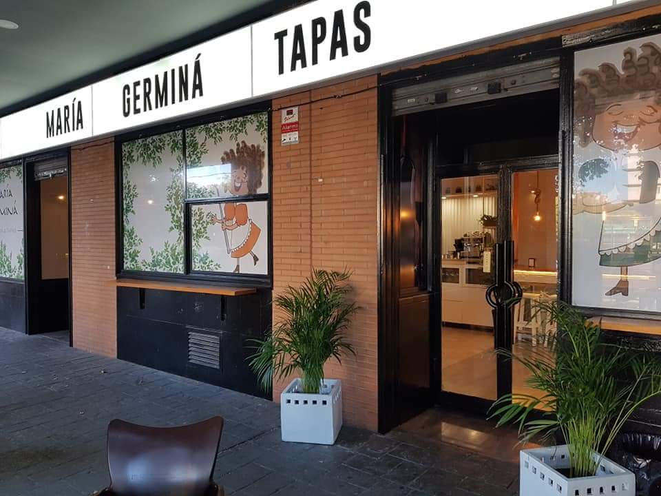
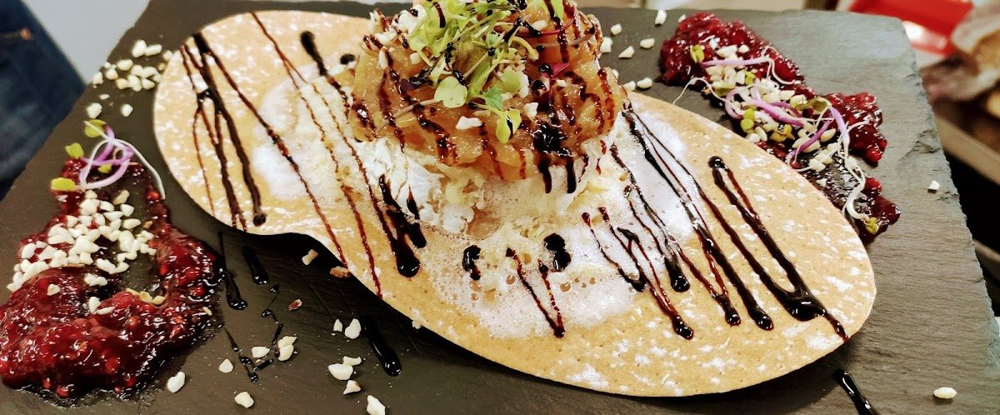
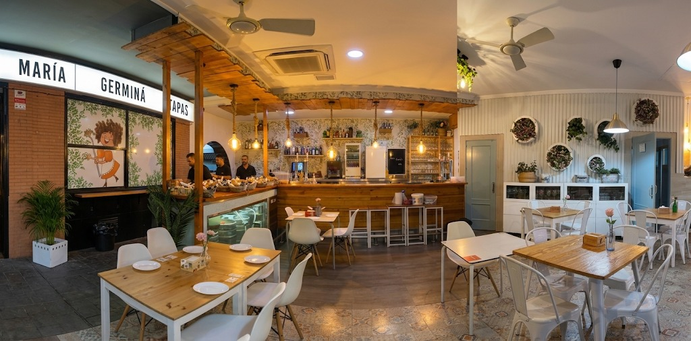
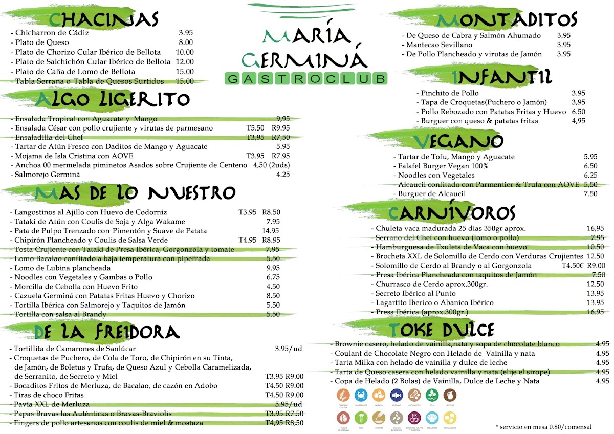
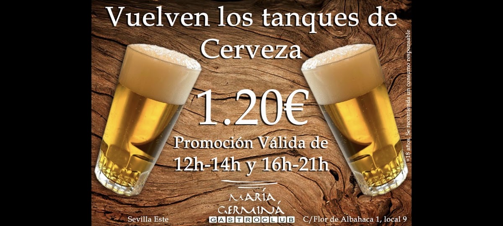
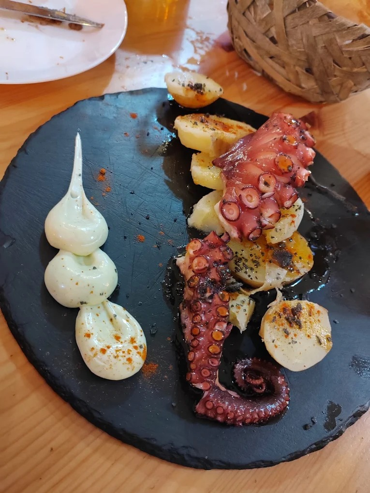
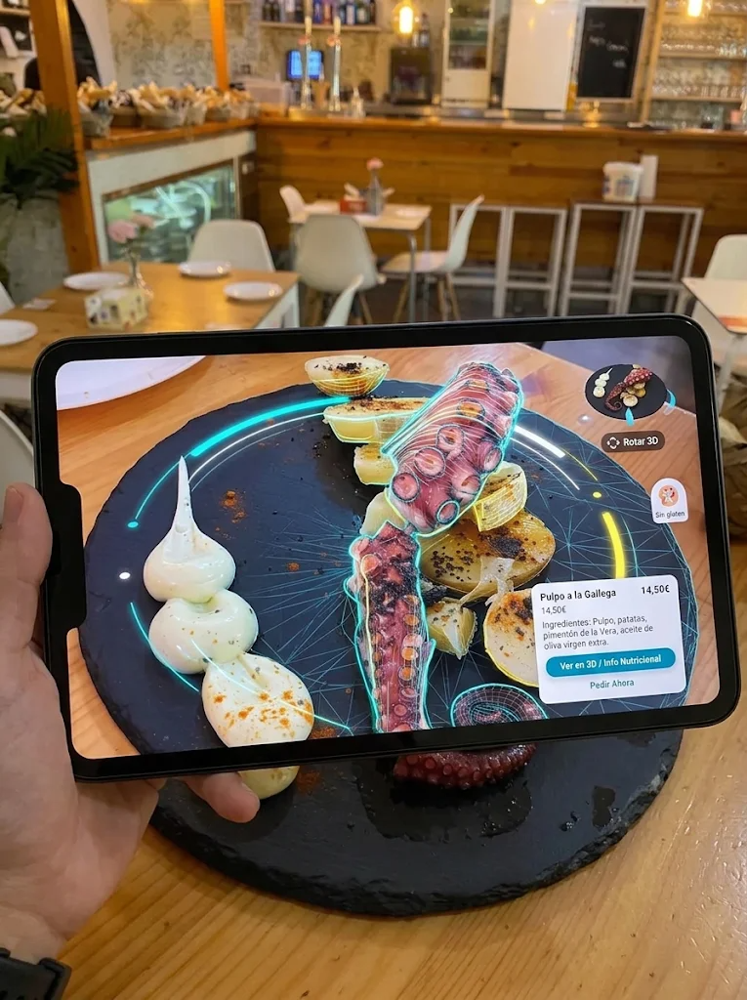

Sevilla Este
María Germiná Tapas
Tradición, sabor y creatividad en Sevilla Este.
C. Flor de Albahaca, 1, local 9, 41020 Sevilla
+34 854 70 51 67Bar de tapas en Sevilla Este
El local
Tapeo en Flor de Albahaca
Bar María Germiná Tapas está en el local 9 de la calle Flor de Albahaca, en Sevilla Este.
La carta impresa del local, firmada como María Germiná Gastroclub, reúne chacinas, fritura, pescados, carnes, montaditos, una sección vegana, platos infantiles y postres. En esa hoja aparecen elaboraciones con el nombre de la casa, como el salmorejo Germiná y la cazuela Germiná, junto a clásicos de tapeo.
La web oficial lo presenta como un local con movimiento, para comer o cenar en compañía. No publicamos aquí una historia, premios ni años de oficio que el restaurante no haya documentado.
Para reservar hay que llamar. Esta página no confirma mesas: la reserva queda hecha cuando el restaurante la acepta.




Dentro del local
Descubre María Germiná por dentro
Entra, explora nuestro espacio y descubre dónde disfrutar de tus tapas favoritas.
Platos en 3D y realidad aumentada
Cada ficha de la carta puede abrir un modelo GLB real y, si el teléfono lo permite, verlo en realidad aumentada. Hoy no hay ningún GLB, GLTF ni USDZ en el proyecto. La ficha muestra la fotografía real cuando existe y no abre un visor vacío.


Los archivos se guardan en assets/modelos/ y assets/modelos/usdz/. La guía está en docs/GUIA-MODELOS-3D.md. La realidad aumentada del navegador necesita HTTPS y un móvil compatible. En iPhone, Quick Look pide además un USDZ.
Contacto
Ven a Sevilla Este
Bar María Germiná Tapas
C. Flor de Albahaca, 1, local 941020 Sevilla +34 854 70 51 67
Horario publicado
Figura así en la web oficial y en la página de Facebook del negocio, con el mismo teléfono y la misma dirección. El lunes no aparece como día de apertura.
- Lunes Cerrado
- Martes a sábado 12:00–00:00
- Domingo 12:00–17:00
No hay sistema de reservas en esta página ni un WhatsApp verificado. El teléfono publicado es un fijo de Sevilla. La mesa se confirma hablando con el restaurante.